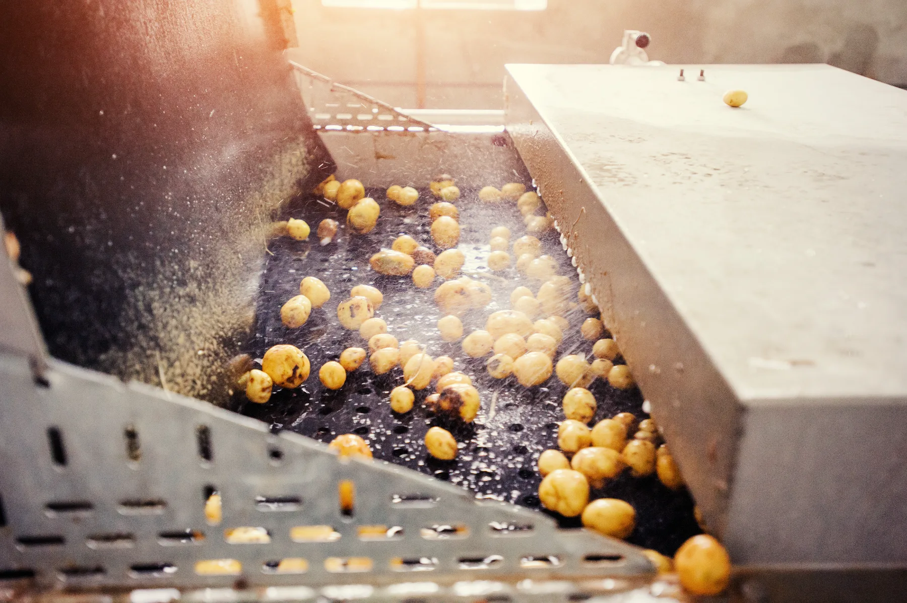

01 · Czym jest myjka do warzyw przemysłowa i jak działa?
Myjka do warzyw przemysłowa to szerokie pojęcie obejmujące każde urządzenie służące do usuwania zanieczyszczeń — ziemi, piasku, resztek roślinnych — z powierzchni warzyw przed dalszą obróbką lub sprzedażą. W praktyce przemysłowej wyróżnia się kilka metod czyszczenia i mycia:
- Mycie szczotkowe — obracające się szczotki mechanicznie oczyszczają powierzchnię warzywa; skuteczne przy warzywach korzeniowych o regularnym kształcie.
- Mycie natryskowe — strumień wody pod ciśnieniem usuwa ziemię z powierzchni; stosowane jako uzupełnienie czyszczenia szczotkowego lub samodzielnie przy delikatniejszych surowcach.
- Mycie bębnowe — produkt obraca się w perforowanym bębnie z wodą; stosowane rzadziej w sortowniach, częściej w przetwórstwie.
Mycie natryskowe a mycie szczotkowe – różnice w działaniu
Mycie natryskowe skutecznie usuwa luźną ziemię i piasek, ale jest mniej efektywne przy twardych zanieczyszczeniach przywierających do skórki. Mycie szczotkowe — realizowane przez czyszczarkę szczotkową — działa mechanicznie i oczyszcza powierzchnię dokładniej, szczególnie przy ziemniakach, marchwi i burakach. W wielu liniach oba rozwiązania są łączone: wstępna separacja ziemi i kamieni (separator), mycie wstępne natryskowe lub w wannie, a następnie czyszczarka szczotkowa jako etap właściwego oczyszczania.
02 · Myjka do warzyw a czyszczarka szczotkowa – czy to to samo?
W języku potocznym „myjka do warzyw” to szerokie, popularne określenie każdej maszyny czyszczącej warzywa. W nomenklaturze technicznej i w ofercie Agro-Weld stosowane są jednak precyzyjne nazwy własne urządzeń. Warto znać różnicę, żeby właściwie dobrać maszynę.
| Cecha | Myjka natryskowa | Czyszczarka szczotkowa | Polerka |
|---|---|---|---|
| Zasada działania | Strumień wody | Obracające się szczotki | Miękkie szczotki polerujące |
| Efekt | Usunięcie luźnej ziemi | Dokładne oczyszczenie skórki | Błyszcząca, wyrównana powierzchnia |
| Typowe zastosowanie | Wstępne mycie, warzywa delikatne | Ziemniaki, marchew, buraki, cebula | Cytrusy, jabłka, warzywa na eksport |
| Obecność w ofercie Agro-Weld | Opcja uzupełniająca | Tak (CS1056 / CS1480 / CS20110) | Tak |
| Materiał | Stal lub INOX | Stal lub INOX | Stal lub INOX |
W ofercie dostępne są czyszczarki szczotkowe i polerki — myjki natryskowe to osobna kategoria, nieobecna w katalogu. Czyszczarki występują w trzech szerokościach roboczych (56, 81 i 111 cm), co przekłada się na wydajność od 6 do 10 t/h. Każdy model można doposażyć w opcjonalny system natryskowy jako uzupełnienie działania szczotek.
Szczegóły oferty znajdziesz na stronie czyszczarki szczotkowe do warzyw Agro-Weld.
03 · Na co zwrócić uwagę wybierając myjkę/czyszczarkę do warzyw?
Dobór maszyny do mycia lub czyszczenia warzyw powinien uwzględniać kilka kluczowych kryteriów:
| Kryterium | Na co zwrócić uwagę |
|---|---|
| Wydajność | Czy maszyna nadąża za tempem linii? Zbyt niska wydajność to wąskie gardło całego procesu |
| Rodzaj szczotek | Proste (dla warzyw okrągłych) vs falowane (dla podłużnych, np. marchew, pietruszka) |
| Materiał wykonania | Stal malowana vs INOX — zależne od wymagań higienicznych i kontaktu z wodą |
| Regulacja docisku | Ważna przy delikatnych warzywach lub cytrusach — zbyt duży docisk uszkadza skórkę |
| Integracja z linią | Możliwość połączenia z separatorem i przenośnikiem — dopasowanie wysokości wysypu i wejścia |
| Łatwość czyszczenia maszyny | Ważna przy zmianie asortymentu lub przy normach HACCP |
Dobór parametrów wydajności dla konkretnego modelu warto omówić z działem technicznym — zależy on od rodzaju surowca, wymagań higienicznych i tempa pracy reszty linii.
04 · Dobór maszyny do rodzaju warzyw
Różne warzywa mają różne wymagania co do procesu czyszczenia — to jeden z kluczowych czynników przy wyborze czyszczarki.
Warzywa korzeniowe – najczęstsze zastosowanie
Ziemniaki, marchew, buraki i cebula to warzywa o stosunkowo odpornej skórce, które dobrze znoszą mechaniczne czyszczenie szczotkami. Czyszczarka szczotkowa Agro-Weld ze szczotkami prostymi sprawdza się przy okrągłych bulwach, natomiast szczotki falowane są lepszym wyborem przy marchewce i pietruszce — dopasowują się do wydłużonego kształtu warzywa i czyszczą dokładniej wzdłuż jego osi.
Przed czyszczarką szczotkową przy warzywach korzeniowych zawsze warto umieścić separator ziemi i kamieni — zdecydowanie przedłuża to żywotność szczotek.
Cytrusy i owoce delikatne – kiedy potrzebna czyszczarka INOX?
Cytrusy, jabłka i inne owoce przeznaczone do sprzedaży bezpośredniej wymagają delikatniejszego czyszczenia — celem nie jest tylko usunięcie ziemi, ale też nadanie skórce estetycznego wyglądu. W takich przypadkach stosuje się polerkę, wyposażoną w miękkie szczotki polerujące, która oczyszcza i jednocześnie wydobywa naturalny połysk skórki.
Przy owocach i warzywach wymagających kontaktu z wodą lub objętych normami HACCP konieczne jest wykonanie maszyny ze stali nierdzewnej INOX. Maszyny dostępne są zarówno w wersji standardowej, jak i w pełnym wykonaniu INOX.
05 · Gdzie w linii produkcyjnej umieścić myjkę do warzyw?
Czyszczarka szczotkowa lub myjka zajmuje w linii stałe miejsce — zawsze po separatorze ziemi i kamieni, a przed stołem selekcyjnym. Typowa kolejność procesu wygląda następująco:
Kosz przyjęciowy → separator ziemi i kamieni → czyszczarka szczotkowa / myjka → stół selekcyjny → wagoworkownica → raszlownica → paletyzator
Umieszczenie czyszczarki po separatorze jest kluczowe — separator usuwa ciężkie zanieczyszczenia, które zużywałyby szczotki. Czyszczarka może wtedy pracować efektywnie na już wstępnie oczyszczonym produkcie.
Więcej o separatorze ziemi i kamieni jako niezbędnym poprzedniku czyszczarki przeczytasz w osobnym artykule. Gotową realizację czyszczarki Agro-Weld możesz obejrzeć na stronie realizacji.
06 · Czyszczarka szczotkowa a polerka – kiedy wybrać każde z rozwiązań?
W ofercie Agro-Weld dostępne są dwa typy urządzeń do mechanicznego oczyszczania powierzchni warzyw: czyszczarka szczotkowa i polerka. Różnią się intensywnością działania i przeznaczeniem.
Czyszczarka szczotkowa wyposażona jest w szczotki o większej twardości (proste lub falowane), które skutecznie usuwają ziemię, piasek i resztki roślinne przywierające do skórki. Stosowana głównie przy warzywach korzeniowych: ziemniakach, marchwi, burakach, cebuli. Dostępna w szerokościach 56, 81 i 111 cm — co przekłada się na wydajność odpowiednio do 6, 8 i 10 t/h.
Polerka wyposażona jest w miękkie szczotki polerujące, które delikatnie oczyszczają i wyrównują powierzchnię warzywa lub owocu, nadając skórce estetyczny wygląd. Stosowana przy cytrusach, jabłkach i warzywach przeznaczonych do ekspozycji na półkach — gdzie wygląd produktu ma znaczenie handlowe. Obie maszyny można wyposażyć w opcjonalny system natryskowy.
W wielu liniach obie maszyny pracują sekwencyjnie: najpierw czyszczarka szczotkowa usuwa grubsze zanieczyszczenia, a następnie polerka nadaje produktowi połysk i jednolity wygląd.
07 · O firmie Agro-Weld
Agro-Weld to polski producent maszyn do czyszczenia, mycia, sortowania i pakowania warzyw oraz owoców z siedzibą w Środzie Wielkopolskiej (Wielkopolska). Firma produkuje czyszczarki szczotkowe i polerki we własnym zakładzie, bazując na autorskich rozwiązaniach konstrukcyjnych. Każda maszyna może być dostosowana do rodzaju surowca, wymaganej wydajności i standardów higienicznych klienta — włącznie z wykonaniem INOX dla linii objętych normami HACCP.
08 · FAQ – Myjka do warzyw przemysłowa
Co to jest myjka do warzyw przemysłowa?
Myjka do warzyw przemysłowa to urządzenie służące do usuwania zanieczyszczeń — ziemi, piasku i resztek roślinnych — z powierzchni warzyw przed dalszą obróbką. W praktyce funkcję tę pełnią najczęściej czyszczarki szczotkowe, które oczyszczają produkt mechanicznie za pomocą obracających się szczotek.
Czym różni się myjka od czyszczarki szczotkowej?
W języku potocznym „myjka” to szerokie określenie każdej maszyny czyszczącej warzywa. Czyszczarka szczotkowa to konkretne rozwiązanie techniczne — oczyszcza produkt za pomocą obrotowych szczotek, nie wyłącznie strumienia wody. Modele czyszczarek szczotkowych można opcjonalnie doposażyć w system natryskowy jako uzupełnienie działania szczotek.
Jaką wydajność powinna mieć myjka do warzyw w małej sortowni?
Wydajność dobiera się do skali produkcji i pozostałych elementów linii — zbyt mała czyszczarka staje się wąskim gardłem, zbyt duża generuje niepotrzebne koszty. Agro-Weld dobiera parametry indywidualnie na podstawie planowanej przepustowości gospodarstwa lub sortowni.
Czy myjka do warzyw musi być wykonana ze stali nierdzewnej?
Nie zawsze — zależy od przeznaczenia produkcji. Wykonanie INOX jest wymagane w liniach objętych normami HACCP oraz tam, gdzie maszyna ma częsty kontakt z wodą. Urządzenia dostępne są zarówno w wersjach standardowych, jak i w pełnym wykonaniu ze stali nierdzewnej.
Ile kosztuje przemysłowa myjka do warzyw?
Cena zależy od wydajności, materiału wykonania i stopnia automatyzacji. Agro-Weld przygotowuje indywidualną wycenę na podstawie zgłoszonych parametrów — warto przed kontaktem określić rodzaj warzyw i planowaną skalę produkcji.
Czy czyszczarkę szczotkową można zintegrować z resztą linii produkcyjnej?
Tak — czyszczarka szczotkowa Agro-Weld jest elementem modułowym i łączy się z separatorem ziemi i kamieni, przenośnikami taśmowymi oraz stołem selekcyjnym, tworząc kompletną linię do oczyszczania i mycia warzyw.
Zastanawiasz się, która maszyna sprawdzi się przy Twoim surowcu? Przejrzyj czyszczarki szczotkowe do warzyw w katalogu lub napisz do nas — powiemy, jaki model i jakie wyposażenie będą właściwe dla Twojej linii.